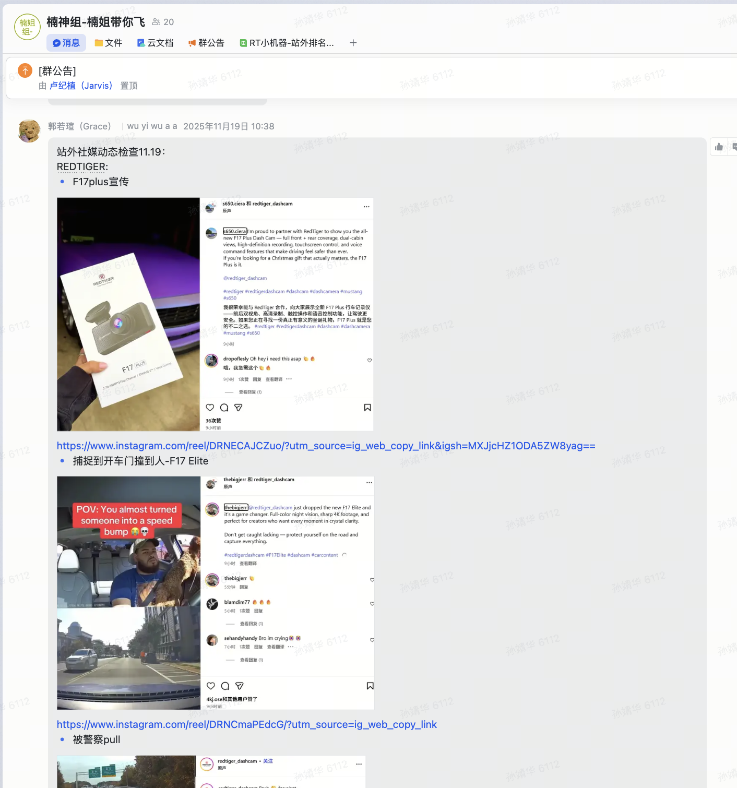
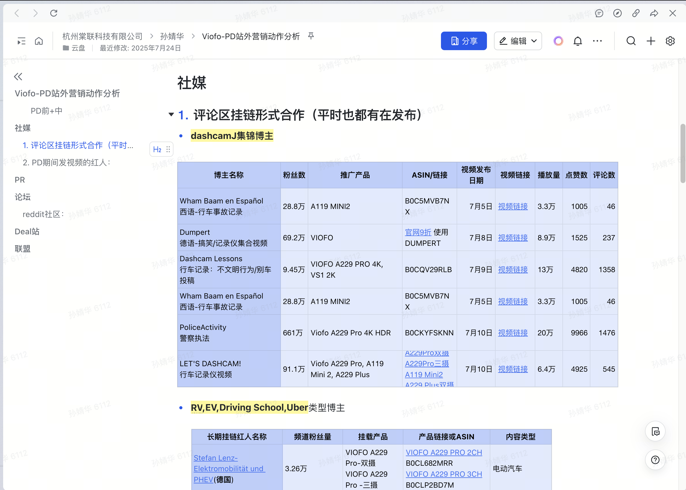
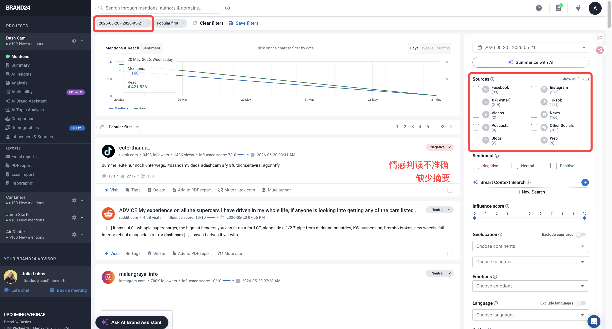
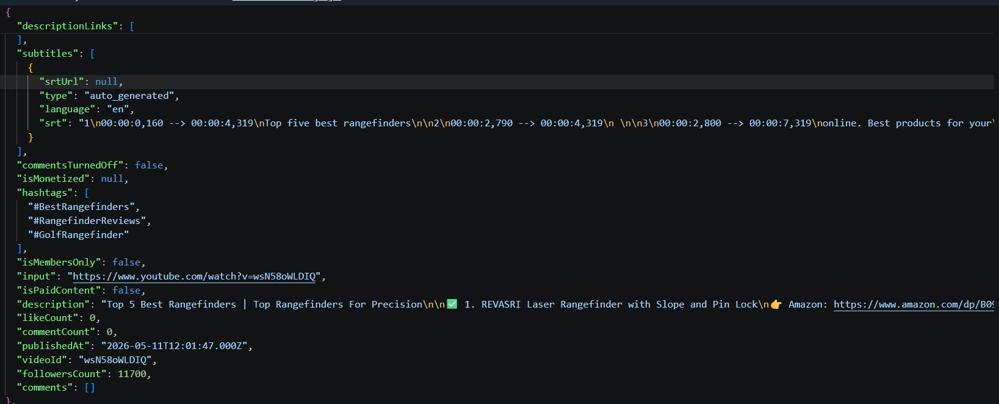
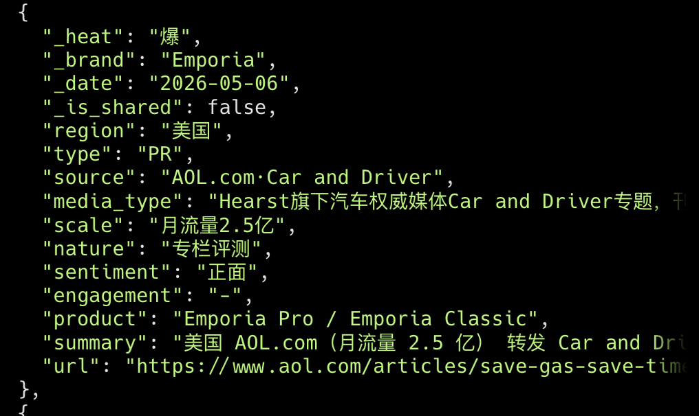
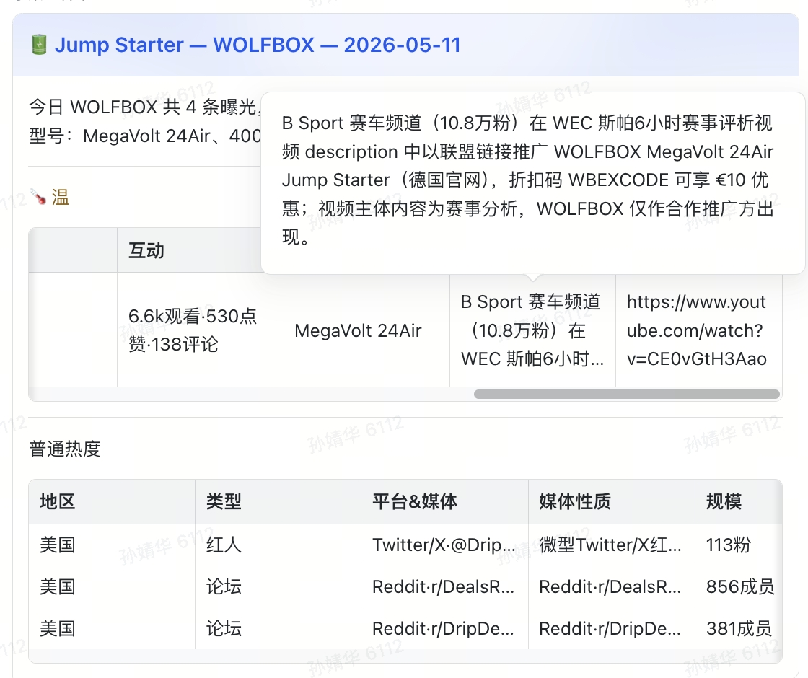
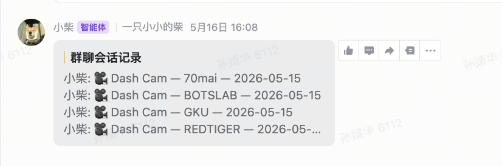
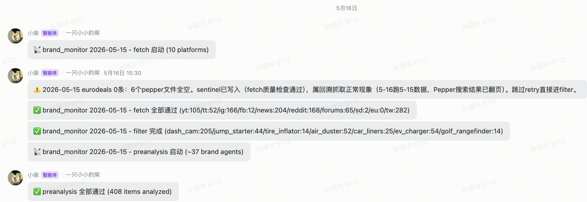

01
AI 实操分享 · 2026
用 AI 搭一个
从手工搜索到全自动流水线
亚马逊 AD · 站外推广
演讲备注
我今天分享的是用 AI 搭一个比较简单的品牌自动监控流程，每天自动爬取竞品和自家品牌在各平台上的动态，用大模型处理成结构化的、容易理解的业务语言，最后把每日报告推送到飞书业务群。
02
背景 · 运营痛点
本品和竞品动态都要快速掌握
🏷️ 为什么监控自家
自家合作红人发了视频，运营端不总是即时知道；站外内容一旦爆了，可以同步加广告预算扩大势能。
🔍 为什么监控竞品
竞品有什么站外动作？会不会引起亚马逊排名波动？要不要跟进对标？
🔥 日常都要看，大促更紧迫
促销期每天需要复盘；竞品信息量大，单靠人工根本搜不完，很容易漏。
以前靠人工逐平台搜索、截图整理表格 ——半天人力，还容易漏。大促期间信息更多，根本抓不全。

日常监控手工整理（累）

大促后复盘竞品动作（信息太多）

Brand24（缺少摘要、分析不准确、数据不完整）
演讲备注
首先说明下为什么会有这个需求。在销售端，运营、推广都有快速掌握当天品类、品牌动态的需求。一方面要了解自家品牌的动态——自家合作红人发了视频，销售端如果能及时了解，红人内容一旦爆了，推广可以同步加广告预算扩大势能；自家产品如果在社媒论坛上有负面反馈，客服也可以及时跟进处理，控制舆情。另一方面要了解竞品的动态，比如竞品有什么站外动作，会不会引起亚马逊排名波动，要不要对标跟进。及时获取品牌动态、用户反馈，对做电商来说是绝对收益的。但之前没有这样一个固定的、每日品牌品类动态同步的业务流程落地：一是对销售端来说不是直接创造业绩的需求；二是在 AI 化之前，这是一个工作量非常大的任务。我们试过每天手动监测品牌动态，一个个品牌去 Google，一条条帖子去理解提炼信息，速度非常慢。也有 Brand24 这样的工具，但情感判读不准确、没有摘要、数据取回不全。这个流程的目的就是利用 AI，将每日监控品牌动态的人力占用降到几乎为 0，让信息以最清晰易读的业务语言呈现。
03
监控什么
多个品类、多个品牌、多个平台
品类 & 品牌
多个品类： 行车记录仪、应急电源、充气泵、暴力风扇、脚垫、EV 充电桩、高尔夫测距仪等多个品牌： 自家品牌 WOLFBOX / REDTIGER + 各品类主要竞品10+ 个数据源： YouTube / TikTok / IG / FB / Twitter / Google News / Reddit / 垂直论坛 / 促销站
以前 vs 现在
以前： 每个平台分别手动搜，截图粘表格，半天人力现在： Apify 云端爬虫市场，一个入口统一调用，按量付费，无需自建维护
想知道的
竞品最近发了什么新品 / 技术首发
权威博主做了品类相关内容，带来了什么热度
用户关注产品什么、夸什么骂什么
竞品有没有有计划地做站外促销
欧美加日等市场有无值得关注的动态
目标：每天定时自动跑 → 5 分钟看完飞书，直接有判断
演讲备注
当前搭的流程主要监控多个公司主营品类，自家和竞品等二三十个品牌，数据源包括 YouTube、TikTok、Instagram 等社媒平台，Google News 上的媒体报道，Reddit 和其他垂直论坛，顶级促销网站。最值得关注的品牌品类动态，99% 基本都能被这些平台覆盖。业务端透过这些信源就能了解：竞品最近发了什么新品、权威博主做了什么内容、是否给品类带来了热度，用户关注产品什么、夸什么骂什么，竞品有没有做站外促销，欧美加日等市场有没有值得关注的动态。监控这么多渠道，主要利用 Apify 这个按量付费的云端爬虫市场，上面有很多现成专用爬虫，即使没有专用爬虫，也能直接调用 RAG 智能浏览器解析做数据采集。
04
整体流程
数据抓取 → 数据过滤与分析 → 推送飞书
STEP 1
定时触发 · 美西时间 0:00 自动启动，抓取前一天数据
STEP 2
并行抓数据 + 双重验收 · 多个 Agent 同时跑 · ① .done sentinel 文件 ② JSON 内容非空
STEP 3
过滤 · 分析 · 生成卡片 · 品类×品牌笛卡尔积拆分 → LLM 预分析 → 7 张卡片 JSON
STEP 4
推送飞书 · 中转群存档 → merge forward 到品类群
brand-monitor-daily / SKILL.md 大纲
brand-monitor-daily
├─ Trigger
├─ 目标
├─ 信号机制 （sentinel + 双重验收）
├─ 进度告警约束 （8 条必发消息）
├─ Step 1 确定目标日期
├─ Step 2 并行启动多个 fetch subagent
│ └─ 失败处理：自动重启 1 次
├─ Step 3 验收 fetch 产出
├─ Step 4 过滤数据（filter）
├─ Step 4.5 按品牌并行预分析（~37 Agent）
├─ Step 4.6 合并分析结果回品类 JSON
├─ Step 5 并行生成 7 个品类报告
├─ Step 6 发送 Lark 卡片
└─ Step 7 汇报 / 告警
演讲备注
接下来看下整体流程，其实非常简单，就是数据抓取、数据过滤与分析、最后推送飞书。
05
Step 2 · 数据抓取
一个入口，覆盖所有需求信源
☁️ Apify：云端爬虫市场
主流平台（YouTube / TikTok / IG / FB / Twitter / Reddit / Slickdeals 等）都有现成专用爬虫
传参数、发 HTTP 请求、拿 JSON——调用方式和普通 API 一样
按量付费，无需自建维护，爬虫由 Apify 社区维护
🤖 RAG 智能浏览器
垂直论坛（dashcamtalk 等）没有专用爬虫
RAG browser 自动加载网页、识别正文结构，把有效内容提取出来
小众站点也能覆盖，不需要为每个站单独写解析逻辑
搜索词消歧义
品牌名有歧义时必须加限定词，否则噪音很多：
HUSKY → 一半结果是宠物用品，加 liner / matNOCO → 一半是北科罗拉多地名，加 boost3W → 电子元件噪音极大，加 floor mat
覆盖的来源
社交： YouTube / TikTok / IG / FB / Twitter | 媒体： Google News社区： Reddit + 多个垂直论坛 | 促销： Slickdeals + 欧洲多站
演讲备注
首先是数据抓取，主要用 Apify 这个平台。主流平台如 Instagram、TikTok 等在 Apify 上都有现成爬虫，设置一个关键词表（包括需要关注的品类、品牌），再设置一个时间窗口，就能采集到需要的信息——帖子内容、评论内容、互动量、帖主粉丝量等一应俱全。因为 Apify 按量付费，花费基本等于内存乘以运行时长，所以要注意额度消耗：一是关键词列表要精准，用最少的关键词覆盖想关注的内容，词不精准抓回来的都是噪音、增加花费；二是每个爬虫可以单独设置内存上限，内存要求低的渠道适当调低上限。
06
Step 3 · 过滤 · 分析 · 生成
按品类 × 品牌拆分后，逐卡预分析
数据文件变化
youtube.json tiktok.json ...
↓ 笛卡尔积拆分
dash_cam_Viofo.json dash_cam_WOLFBOX.json ... (~37 个)
↓ 预分析 + 合并
lark_dash_cam.json ... (7 张) 为什么按笛卡尔积拆分
不拆上下文太长；每个 Agent 只看一个品类下一个品牌，判断更准确。
原始抓取数据 → 预分析后结构化字段

原始抓取数据

预分析后结构化字段
表达示例

结构化字段 → 业务语言表达示例
演讲备注
数据抓取完，就要过滤、分析、生成报告。数据抓取回来都是一个渠道一个结构化的数据文件，例如 youtube.json，但单个渠道的信息量可能超过一兆，会超出 AI 的上下文限制，非常影响分析质量。所以在分析之前，先按品类乘以品牌的维度对各个渠道的数据进行过滤重组，这样每组数据最大也就几百 KB，分析质量比较好。为了更好地保证分析质量，进行两轮分析：第一轮对单条内容进行分析（品类-品牌维度下，每个品牌当日最多几十条内容）；第二轮针对这几十条摘要内容进行当日总结。
07
Step 4 · 推送飞书
将同品类消息打包，转发到各业务群
为什么先发中转群
先把该品类所有品牌卡片发到中转群，拿到所有消息 ID 再统一打包转发——群里收到的是一整组，不会发了一半就断
中转群同时作为历史存档，任何时候都能回查或重发
发送目标
品类专属群： 各品类团队只收自己品类的消息AD 站外信息同步群： 跨品类推广同学统一接收
群里收到一条折叠消息，展开才是所有品牌卡片——不刷屏
推送效果

飞书收到的折叠消息
日报演示
▶ 日报演示视频
演讲备注
分析完成，最后一步就是把各品类信息推送到有需要的业务群，这个过程先把所有三十几张品牌卡片推送到一个中转群再合并转发到业务群。这样业务群收到的就是一条折叠消息，有需要的同学自己点进去看，减少不必要的视觉占用。
08
可靠性
每一步都有飞书进度报告

每个 stage 的飞书进度通知
每个 stage 完成 / 异常都发消息
fetch 启动、全部通过、filter 完成……8 条必发消息
任何平台失败立即发告警，列出失败原因和数据路径
主进程挂了也能从飞书看到死在哪一步，不用盯着终端
自动重试 + 不降级
任何平台失败 → 自动重启一次，尝试复用 Apify 已有爬取结果
重试后仍失败 → 停下来告警，不用残缺数据跑报告
宁可今天没报告，也不要出一个误导人的报告
演讲备注
整个品牌监控的流程运行下来，涉及到多个环节，且数据量大，偶尔可能会发生错误，所以每运行完一步，就让 AI 通知一下，有发生错误也会第一时间汇报。
09
效果
实际效果演示
整个流程跑完大约需要 1–1.5 小时 。人每天花 5–10 分钟 看飞书消息，就能比较全面地了解品类品牌在网络上的讨论动向。
演讲备注
这是一个实际效果的演示，大概每天花 5 到 10 分钟看飞书消息，就能比较全面地了解品类品牌在网络上的讨论动向。
10
保留灵活性的地方
保留灵活性，业务侧随时能自己调整
📋
加减品牌 / 改账号：只改一个配置文件
📝
调试阶段用临时脚本，跑通后逐步固化
🔍
每天预检
演讲备注
然后这个流程也有一些保留灵活性的地方，例如要增减监控的品牌，只要改一个配置文件，就会自动同步下游模块。还有就是这个流程目前还是用的临时脚本，最近已经跑通了，会把脚本固定下来，增加稳定性，也减少消耗。再是每天正式跑之前先检查一遍爬虫返回字段是否有变化，发现了及时修，避免跑到空内容。